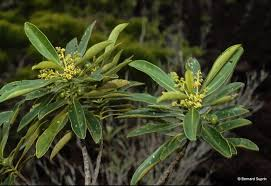

Oncothecaceae
(No common name widely used)
Oncothecaceae is a small, unique family of flowering plants containing only one genus, Oncotheca, with two species of evergreen trees or shrubs. The family is endemic to the island of New Caledonia in the Pacific Ocean, making it geographically highly restricted and of significant conservation interest.
Overview
The Oncothecaceae family represents an isolated lineage within the asterid clade of flowering plants. Its sole genus, Oncotheca, consists of two species, O. balansae and O. humboldtiana, both found only in the biodiversity hotspot of New Caledonia. These plants typically grow as understory trees or shrubs in humid forests, often on ultramafic soils characteristic of the island.
Due to their rarity, restricted distribution, and somewhat ambiguous morphology, the phylogenetic placement of Oncothecaceae has been debated for decades. Early classifications placed it near various groups, but recent molecular data (APG IV system) firmly places it within the order Icacinales, closely related to the family Icacinaceae.
The family holds ecological and evolutionary significance as part of New Caledonia's unique, ancient flora. Its members are not known to have significant economic uses, but are important components of their native ecosystems.
Quick Facts
- Scientific Name: Oncothecaceae Kobuski ex Airy Shaw
- Common Name: None widely used
- Number of Genera: 1 (Oncotheca)
- Number of Species: 2 (O. balansae, O. humboldtiana)
- Distribution: Endemic to New Caledonia
- Evolutionary Group: Eudicots - Asterids - Icacinales
Key Characteristics
Growth Form and Habit
Members are evergreen trees or shrubs, reaching heights of up to 15-20 meters, although often smaller. They possess woody stems and are adapted to forest understory conditions.
Leaves
Leaves are simple, relatively large, leathery (coriaceous) in texture, and arranged alternately along the stem. The leaf margins are typically entire (smooth, without teeth or lobes). Stipules are absent.
Inflorescence
Flowers are borne in terminal or axillary inflorescences, which are typically branched structures like panicles or sometimes racemes.
Flowers
The flowers are relatively small, actinomorphic (radially symmetrical), bisexual, and typically 5-merous (parts in fives).
- Calyx: Composed of 5 sepals, which are fused at the base (connate) and persistent in fruit.
- Corolla: Composed of 5 petals, which are fused together to form a distinct corolla tube with 5 lobes (sympetalous). The corolla is often yellowish or greenish-white.
- Androecium: Consists of 5 stamens that alternate with the corolla lobes. The filaments are attached to the corolla tube (epipetalous). Anthers open via longitudinal slits.
- Gynoecium: The ovary is superior, typically composed of 5 fused carpels (syncarpous) forming 5 locules (chambers), although sometimes fewer locules develop. Each locule contains a single ovule attached near the apex (apical placentation). The style is short, topped by a 5-lobed stigma.
Fruits and Seeds
The fruit is a fleshy drupe (like a cherry or plum), containing a hard inner stone (pyrene) formed from the ovary wall. The drupe typically contains 1 to 5 seeds, depending on how many ovules develop.
Chemical Characteristics
Detailed chemical studies are somewhat limited. Unlike many other asterid families, Oncothecaceae appears to lack iridoid compounds, which was one reason for past uncertainty in its classification. Aluminium accumulation has been noted in the tissues, likely related to growing on New Caledonia's metalliferous soils.
Field Identification
Identifying Oncothecaceae in the field requires being in the specific habitats of New Caledonia. Key features rely on a combination of vegetative and floral characteristics:
Primary Identification Features
- Location: Must be within the natural range – New Caledonia.
- Habit: Evergreen tree or shrub.
- Leaves: Alternate, simple, leathery, entire margins, lacking stipules.
- Flowers: Small, 5-merous, with a tubular corolla (fused petals) and a superior ovary. Look for 5 stamens attached to the corolla tube.
- Fruit: Fleshy drupe.
Secondary Identification Features
- Inflorescence: Branched panicles or racemes, terminal or axillary.
- Stigma: Check for the 5-lobed stigma (may require magnification).
- Habitat: Typically found in humid forests, often on ultramafic soils.
Seasonal Identification Tips
- Flowering/Fruiting Period: Varies, but flowers and fruits are essential for definitive identification. Check local botanical records for peak seasons in New Caledonia.
- Vegetative State: The combination of alternate, simple, entire, leathery leaves on an evergreen tree/shrub in New Caledonia can narrow possibilities but is not exclusive to this family.
Common Confusion Points
Distinguishing Oncothecaceae requires careful examination, especially in a diverse flora like New Caledonia's. Confusion might arise with other families having simple, alternate leaves and small flowers.
- Icacinaceae: Phylogenetically related, but often differs in details like ovary structure (sometimes 1-locular), stamen number, or presence/absence of a corolla tube.
- Other New Caledonian endemics: Requires comparison with specific keys and flora of the region. The combination of 5-merous sympetalous flowers, superior 5-locular ovary, and drupaceous fruit is key.
Field Guide Quick Reference (New Caledonia)
Look For:
- Evergreen tree/shrub
- Leaves: Alternate, simple, leathery, entire
- Flowers: Small, 5-merous
- Petals: Fused into a tube
- Stamens: 5, attached to corolla
- Ovary: Superior, 5-locular
- Fruit: Drupe
Key Distinctions:
- Endemic to New Caledonia
- Combination of superior ovary AND fused petals
- Absence of stipules
- Leathery leaves
- Habitat often ultramafic soils
Notable Examples (The Only Species)
The family comprises only one genus, Oncotheca, with two distinct species:

Oncotheca balansae
(No common name)
This species is the type species for the genus and family. It typically grows as a tree up to 20 meters tall. Found in humid forests on various substrates in New Caledonia, including ultramafic soils. Distinguishing features compared to O. humboldtiana often relate to subtle differences in leaf size, inflorescence structure, and flower details.

Oncotheca humboldtiana
(No common name)
Generally a smaller tree or shrub compared to O. balansae, often found at higher altitudes or in more exposed sites within New Caledonia's forests, particularly associated with ultramafic maquis or montane forest environments. It may have slightly smaller leaves or denser inflorescences than O. balansae.
Phylogeny and Classification
Oncothecaceae represents a phylogenetically isolated lineage endemic to New Caledonia. Its classification has been challenging due to its unique combination of characteristics. Historically, it was tentatively placed near families like Aquifoliaceae, Escalloniaceae, or even Garryaceae, or assigned its own order, Oncothecales.
However, modern molecular phylogenetic analyses, particularly those incorporated into the Angiosperm Phylogeny Group systems (culminating in APG IV, 2016), place Oncothecaceae within the order Icacinales, alongside the family Icacinaceae. This placement situates it within the large asterid clade of eudicots, specifically within the lamiid subgroup (though Icacinales is somewhat peripheral to the core lamiids).
Position in Plant Phylogeny (APG IV)
- Kingdom: Plantae
- Clade: Angiosperms (Flowering plants)
- Clade: Eudicots
- Clade: Asterids
- Order: Icacinales
- Family: Oncothecaceae
Evolutionary Significance
Oncothecaceae is significant primarily due to its:
- Endemism: Its restriction to New Caledonia highlights the island's role as a refuge for ancient and unique plant lineages.
- Phylogenetic Isolation: Represents a distinct evolutionary branch within the Icacinales/asterids, offering insights into the diversification of this major plant group.
- Morphological Uniqueness: The specific combination of features (sympetalous corolla, superior 5-locular ovary, alternate simple leaves) distinguishes it from close relatives.
- Conservation Importance: As a rare, endemic family, its preservation is tied to the conservation of New Caledonia's threatened ecosystems.